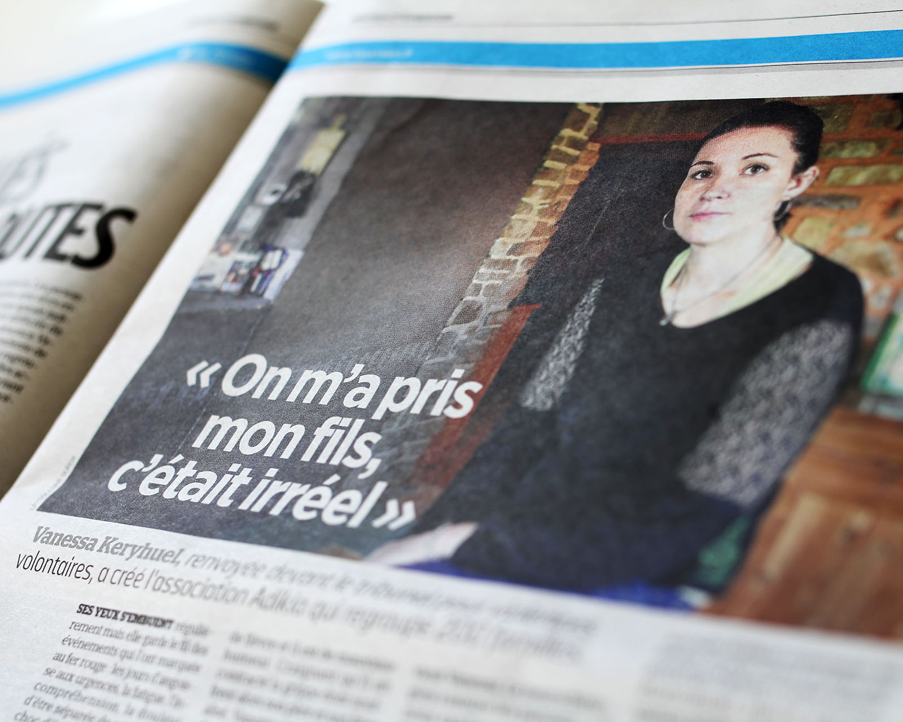
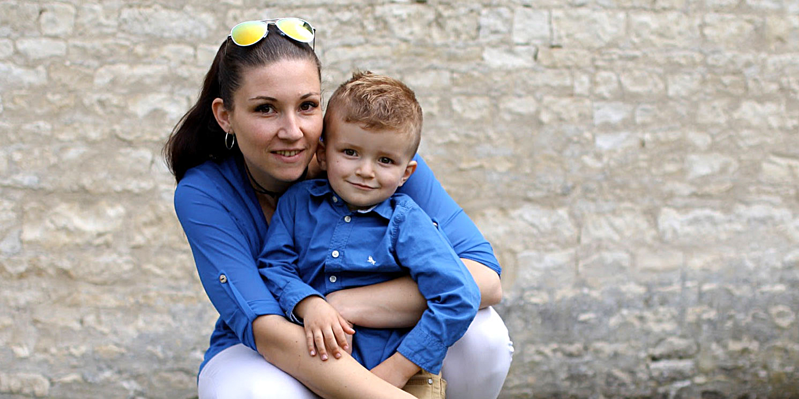
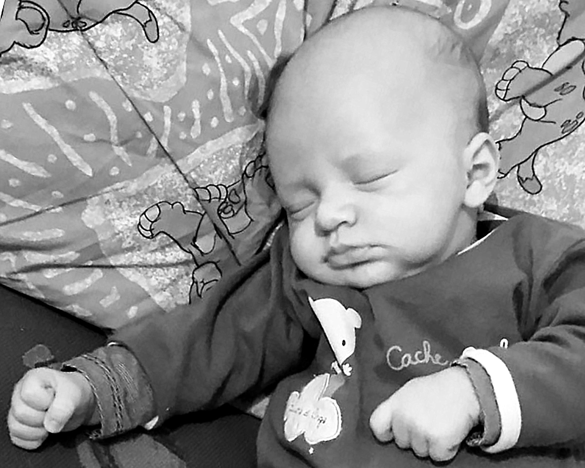
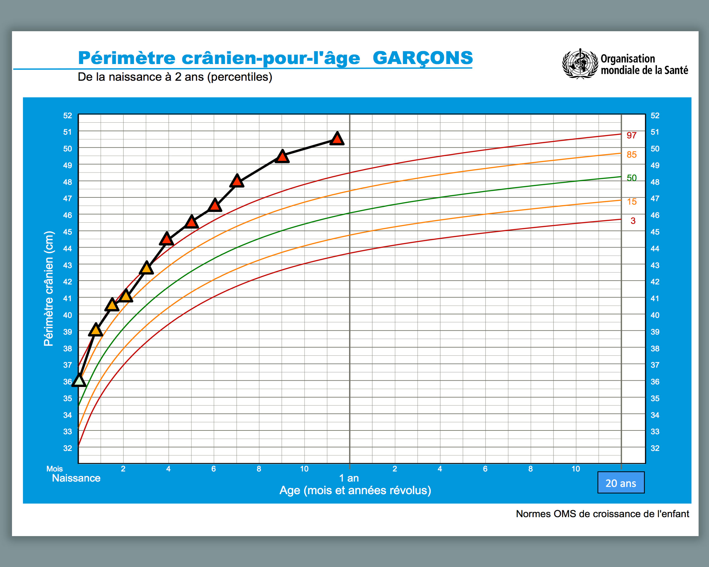
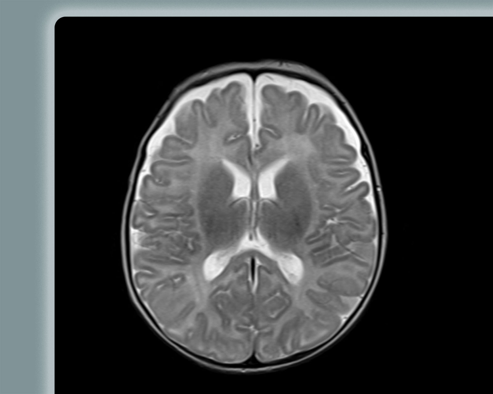
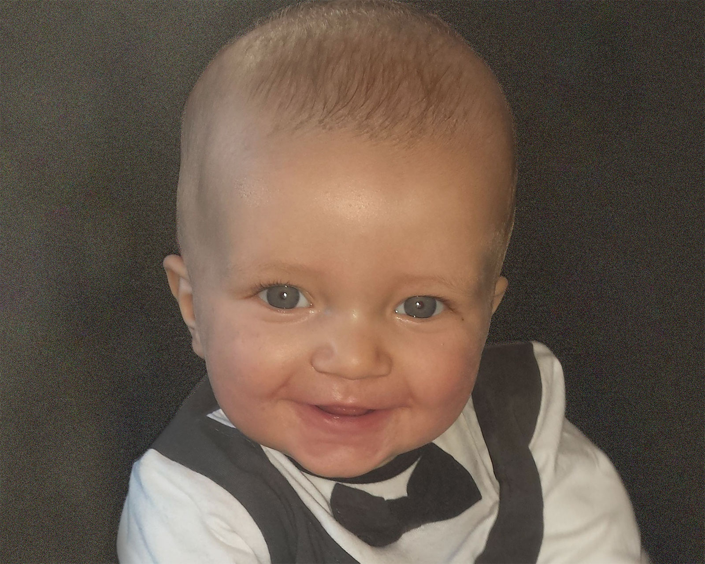
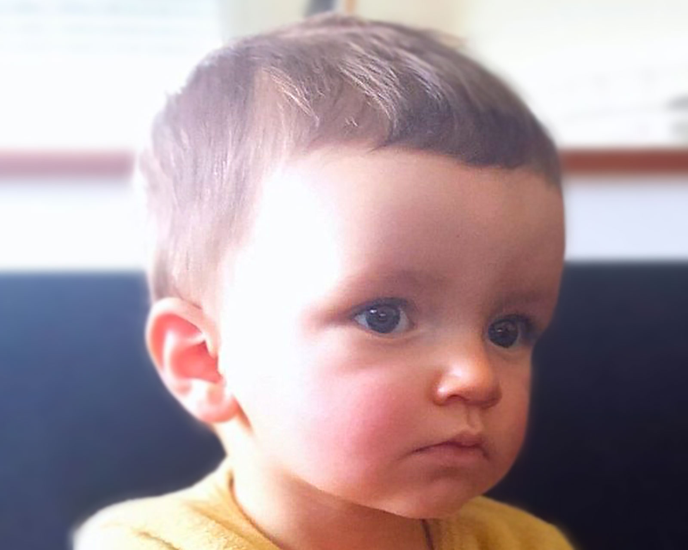

27fév 19
Articles dans Le Parisien
Le Parisien publie aujourd'hui une série d'articles sur le syndrome du bébé ...
Lire la suite
Ne remplissez ce formulaire que si vous êtes injustement accusé de maltraitance envers un bébé suite à un diagnostic abusif posé par les médecins.
Exemples : hématomes sous-duraux (syndrome du bébé secoué), fractures, bleus d'origine médicale ou accidentelle
Nous ne pourrons pas donner suite aux autres demandes.
Vous êtes journaliste ? Écrivez-nous plutôt sur contact@adikia.fr


Vanessa est la présidente de l'association et la maman du petit Hylann. Un signalement a été fait après que des médecins ont cru voir un hématome sous-dural au scanner. Pour d'autres médecins, il s'agirait en réalité d'un excès plutôt banal de liquide céphalo-rachidien autour du cerveau. Tandis que Vanessa a été mise hors de cause à l'issue de la procédure éducative, les expertises réalisées ont conclu formellement à la maltraitance. Pourtant, les auteurs des expertises ont écrit il y a quelques années un article selon lequel il ne faut pas diagnostiquer le syndrome du bébé secoué chez les enfants atteints d'un excès de liquide céphalo-rachidien s'il n'y a aucun signe traumatique... ce qui est précisément le cas d'Hylann.
Metronews a publié l'histoire de Vanessa le 16 mars 2016 et une pétition a été lancée en mai 2017. Une vidéo a été tournée et diffusée par l'Avis des Gens.
Mise à jour (29 janvier 2018) : plusieurs reportages et articles sur Vanessa ont été diffusés, sur France 5, France Bleu, Parole de mamans
Mise à jour (12 janvier 2019) : Vanessa se défendra au Tribunal Correctionnel de Rennes le lundi 4 mars 2019 à 14h.
Mise à jour (4 mars 2019) : Vanessa a été relaxée !
Hylann est né le 27 décembre 2014, un jour après terme. Il pèse 3,65kg pour 52 cm. Dès la première nuit, il semble avoir des problèmes de respiration. Comme s’il était encombré et gêné, comme si sa respiration était entrecoupée.
Nous rentrons à la maison le 30 décembre. Hylann est un bébé merveilleusement sage et très gourmand. Il ne pleure que lorsqu’il avait faim. Mais nous le sentons toujours mal… Nous mettons cela sur le compte des coliques du nourrisson.
Le plus difficile est la nuit. La journée, il dort près de moi dans son transat, à demi assis contre moi ou en position fœtale. Mais la nuit il est dans son couffin, au pied de notre lit, et la position allongée lui est très inconfortable. A peine dans son berceau, il fait des petits bruits très particuliers. Toujours cette gêne respiratoire qui l’empêche de dormir. Parfois même, nous entendons comme un blocage de sa respiration. A chaque fois nous nous levons vite pour aller le remettre en position assise ou le ramener à nos côtés. Le plus souvent il finit par se rendormir contre moi.

Le 20 janvier 2015, je vais au rendez-vous mensuel avec la pédiatre à Bruz (35). Je lui fais part de notre inquiétude quant aux problèmes respiratoires d’Hylann et à l’inconfort dont il souffre. Le docteur me parle alors d’un RGO interne (Reflux gastro œsophagien) et met en place un traitement à base de Gaviscon, me disant de surtout bien le surveiller afin de prévenir un éventuel malaise. Elle note également que son périmètre crânien est passé de 36cm à la naissance à 39cm en seulement 3 semaines (sur le compte rendu il est noté « Attention périmètre crânien ++++ »). Nous rentrons chez nous sans inquiétude et plutôt rassurés que notre bébé puisse être bientôt soulagé. Mais malgré le traitement, Hylann est toujours dérangé. Nous nous disons qu’il faut quelques jours pour qu’il fasse effet.Le 16 février 2015, alors que le papa et le frère de Hylann sont au lit avec une grosse grippe, lui aussi présente des signes de fébrilité. Il a de la fièvre, une température de 38,5 °C. J’appelle le pédiatre, elle ne nous reçoit que quelques heures plus tard. Mon fils est un peu pâle et de mauvaise humeur. Aujourd’hui il n’a pas terminé ses biberons. Il est redescendu à 38 °C, c’est peu mais il n’a que 6 semaines. La pédiatre nous envoie au service des urgences pédiatriques de l’hôpital de Rennes. Lorsque nous arrivons là-bas, Hylann n’a plus de température, il gazouille, il va très bien. La pédiatre des urgences l’examine et relève que son périmètre crânien mesure 41cm. C’est encore 2cm de pris en à peine 3 semaines, ce qui est beaucoup. Elle pense à une infection de type méningite et engage plusieurs séries d’examens, parmi lesquelles une échographie de la fontanelle. Nous sommes dans tous nos états à l’idée que notre bébé pourrait avoir une méningite mais nous essayons de ne pas paniquer. Je suis très stressée, j’ai peur. L’échographie de la fontanelle révèle un épanchement de liquide péri-cérébral. Hylann est hospitalisé cette nuit-là, je reste à ses côtés.

Le 17 février, il est emmené pour un IRM cérébral. Une fois de plus nous sommes terriblement angoissés et nous restons dans le flou, sans savoir ce que nous faisons là ni ce que notre bébé pourrait avoir. Vers 15h le neurochirurgien arrive enfin et nous donne son compte rendu : « Hylann va très bien. L’imagerie révèle un épanchement de liquide autour du cerveau qui pourrait ressembler à du sang, mais à du sang très vieux… Rassurez-vous, ce n’est pas du sang. Selon-moi c’est du liquide céphalo rachidien. Il est impossible que ce soit du vieux sang puisque Hylann n’a que 7 semaines. C’est très commun, ne vous inquiétez pas. » Vous n’imaginez-pas à quel point nous sommes soulagés ! Peu importe qu’il ait du liquide inexpliqué dans le crâne pourvu que ce ne soit ni une tumeur ni un hématome. Nous avons eu le temps durant cette journée de nous imaginer tous les scénarios possibles. Et les plus terribles. A ce stade Hylann est toujours aussi souriant et en forme, cela nous redonne de l’énergie.
Le 18 février, toujours hospitalisé sans raison, Hylann est envoyé en urgence pour un scanner cérébral. Sans explications. Le scanner étant moins fiable que l’IRM, nous ne comprenons pas. Et rebelotte, la panique est de nouveau là ! Bilan désastreux, Hylann a deux hématomes sous-duraux. Un de 5mm et l’autre de 10mm. Le ciel nous tombe sur la tête. Nous ne comprenons rien à rien. Nous accusons le coup et tentons de chercher la cause de ces HSD (hématomes sous-duraux). Nous allons sur internet et tapons dans notre moteur de recherche « HSD nourrisson »… et nous découvrons que la suite de notre histoire s’annonce dramatique : « SBS : Syndrome du Bébé Secoué ».

Les jours qui suivent, les médecins réalisent une batterie d’examens, tous négatifs. Pas d’hémorragie rétinienne. Pas de fracture osseuse. Les prises de sang sont toutes normales. Le médecin en chef du service nous reçoit quelques jours après le début de l’hospitalisation d’Hylann. Il nous explique vaguement que comme notre enfant n’a aucune pathologie connue, il semblerait qu’il soit victime du syndrome du bébé secoué. Nous nous y attendions mais nous savons que c’est impossible : Hylann ne nous a jamais quittés, il n'a jamais été secoué par qui que ce soit, et il va très bien. Et puis il y a ce que le neurochirurgien nous a dit. Nous doutons fortement de ce diagnostic.Le 20 février, un signalement est fait au procureur de la République de Rennes. Une enquête policière débute ce même jour. Notre maison est perquisitionnée. Nos téléphones portables, tablettes et ordinateurs nous sont retirés et mis sous scellés.
Le 27 février, à 18h, la Commission Départementale d'Aide Sociale (CDAS) me contacte à l’hôpital et m’ordonne de me rendre au plus vite à leurs bureaux. 18h… Ce type d’organisme est fermé à cette heure-là… Je laisse mon bébé dans sa chambre d’hôpital avec sa grand-mère et quitte le service en larmes. Je comprends que ce soir ma vie va devenir un cauchemar sans nom…
J’arrive là-bas avec Fabrice, mon conjoint, nous sommes reçus par la directrice du centre qui nous annonce qu’une équipe s’est chargée de récupérer Hylann. Ils nous l’amèneront quelques heures plus tard pour que l’on puisse lui dire au revoir. Notre bébé est placé 15 jours dans une famille d’accueil, sur ordre du procureur et juge des enfants. Nous n’avons que quelques minutes avec lui avant qu’ils ne nous l’enlèvent. Le ciel me tombe sur la tête. Je ne sens plus mes jambes. Mon cœur se brise en mille morceaux. Mon mari est comme sonné par la nouvelle. Les au-revoir sont éprouvant pour nous, mais aussi pour notre bébé qui pleure à chaudes larmes. Nous sommes dévastés.
Nous rentrons à la maisons seuls… son grand-frère attend sagement avec ma maman. Nous préférons lui inventer une histoire pour ne pas le blesser, pour le préserver. Nous lui disons que Hylann a encore besoin de voir des médecins et que je suis rentrée pour m’occuper de lui. Il nous croit mais se montre très inquiet pour son petit frère.

Trois jours plus tard, nous sommes convoqués à la gendarmerie. Nos proches ont déjà été entendus la veille. Nous nous présentons à 8h30. Les gendarmes nous annoncent alors que nous sommes mis en garde à vue jusqu’à nouvel ordre. 36h… Une nuit dans une cellule froide avec seulement une fine couverture pour dormir. Je ne mange pas. Je ne dors pas. Ils me menacent de me mettre en détention provisoire si je n’avoue pas. Etant de nature très directe, je me rebelle un peu. Je suis innocente et je veux récupérer mon fils. Vous imaginez-bien que je ne suis pas très gentille avec eux… Ce qui me portera préjudice… Au passage, j'ai aussi eu le malheur de dire qu'il m'arrivait régulièrement de sortir mon bébé de son berceau pour le tenir contre moi lorsqu'il avait des difficultés à respirer ou à faire son rot, à cause de ses régurgitations. C'est ce que j'expliquais à une amie par SMS, que je devais le « secouer » très légèrement pour éviter qu'il ne s'étouffe, un geste naturel et doux que toute maman aurait à ma place, et que mon amie a totalement compris dans la conversation. Aussi incroyable que cela puisse paraître, à cause de ce mot sorti de son contexte, cela a suffi aux enquêteurs pour dire que j'avais « avoué » être l'auteur de secouements extrêmement violents infligés dans le but de tuer !!
Trente-six heures plus tard, nous sommes amenés au tribunal, en comparution immédiate devant la juge d’instruction. Celle-ci décide de me mettre sous contrôle judiciaire avec obligation de rendez-vous mensuel et suivi psychologique. Car, en 7 semaines, je n’ai pas quitté mon fils un seul instant. Mon mari est mis en témoin assisté. La juge lui ordonne de quitter le domicile familial, d’aller vivre chez sa mère et lui interdit de prendre contact avec moi de quelque manière que ce soit. Nous allons être séparés pendant plus d’un mois… Je sors du tribunal, exténuée, usée, abasourdie par les nouvelles. Mon mari est sur le trottoir d’en face, nous partons chacun dans la direction opposée…
Le 12 mars 2015, le placement de Hylann prend fin. Nous sommes alors convoqués par le juge des enfants afin qu’il statue sur les suites du placement. Depuis le 27 février, je n’ai vu mon fils qu’une heure par semaine. Le juge, compte tenu de l’instruction et de la mise hors de cause de mon mari, décide de laisser Hylann retourner auprès de son père, au domicile de sa grand-mère. Malgré ma peine, quel bonheur de les savoir réunis ! Quant à moi, je reste à mon domicile avec mon grand garçon de 5 ans. Je n’ai le droit qu’à des visites encadrées par ma belle-mère, un jour sur deux.

Un mois plus tard, le juge annule l’interdiction qui m’empêchait de voir Fabrice. Nous voilà à nouveau en couple ! Mais il ne peut toujours pas rentrer à la maison avec le petit. Nous devons attendre le mois de juillet pour être enfin tous réunis à notre domicile, sans plus aucune emprise du juge des enfants. Avec seulement un suivi mensuel de l’ASE, avec laquelle nous avons créé de très beaux liens. Ce sont de belles personnes et elles ont cru en moi, enfin.
En septembre 2016, le juge des enfants ordonne enfin un non-lieu.
Du côté de l’enquête judiciaire, une première expertise est réalisée par le légiste de l’hôpital de Rennes (très neutre, vous imaginez). Bien sûr il affirme qu’il s’agit d’un SBS. Alors nous demandons une contre-expertise.
Après plusieurs recherches sur internet, nous trouvons un médecin qui pourrait éventuellement être le plus à même de nous sortir de là : un neurochirurgien du CHRU de Lille. Ce monsieur a rédigé plusieurs articles dans des revues internationales indiquant que le SBS pouvait parfois être diagnostiqué à tort et que certaines pathologies pouvaient créer des HSD et autres symptômes affiliés aux SBS. Le juge accepte que la contre-expertise soit réalisée par ce médecin, et nous le rencontrons en septembre 2015.
En consultation, celui-ci nous paraît plutôt distant et mal à l'aise. Il ausculte notre fils et fait ses premières constatations. Il confirme que Hylann a un gros périmètre crânien et une fontanelle encore très large, ce qui serait le résultat d’une macrocéphalie essentielle (souvent héréditaire). Pour lui, le dossier de Hylann est « atypique » mais ne fait apparaître aucun doute de SBS. Il nous précise qu’il ne rapportera que le côté médical à son rapport, qu’il ne peut pas s’exprimer sur le SBS. Il y a beaucoup de pressions au sein du corps médical. Il nous confie même que beaucoup de ses confrères rêvent de brûler son fameux article selon lequel la macrocéphalie peut favoriser les hématomes sous-duraux.
Début mars, nous recevons le compte rendu d’expertise. Celui-ci a été rédigé par le neurochirurgien mais également par un médecin légiste de Roubaix. La conclusion du rapport est la suivante : « hématomes sous-duraux inexpliqués en lien avec une macrocéphalie et probablement favorisée par une fontanelle anormalement large ou d’origine traumatique liée à de faibles secousses ». Vous comprendrez que cela ne me disculpe pas et que cela ne correspond pas non plus à ce que le neurochirurgien nous a dit… Nous relançons la machine en disant au juge que ce professeur ne dit pas tout dans son rapport. Nous lui expliquons qu’il me disait innocente et ne l’a pas écrit. Le juge envoie alors un complément d’expertise pour obtenir la confirmation de ce que je viens de lui écrire.
En octobre 2016, nous recevons ce complément d’expertise et, à notre grande surprise… le ton change… Voici la conclusion : « la macrocéphalie ne peut en aucun cas être la cause des hématomes sous-duraux et ils ont été provoqués par une voire plusieurs violentes secousses. » Retournement de situation : les experts contredisent leurs premiers écrits… cela n’a ni queue ni tête. Nous décidons d’arrêter de nous battre, puisque tout ça ne mènera à rien. Ils nous mentiront tous…
Le mensonge fait partie intégrante de notre histoire. Rappelez-vous le tout premier rapport d'imagerie, celui du 17 février 2015, mentionnant la présence de liquide céphalo-rachidien. Celui-ci n’apparaît nulle part dans le dossier de Hylann, ni dans les comptes rendus d’hospitalisation.
Nous tentons d'expliquer tout cela au juge, nous montrons les éléments démontrant les contradictions des experts. La réponse du juge ? « Vous êtes médecin ? Non, alors taisez-vous. »
Nous préférons réaliser une expertise à titre privé, de manière à comprendre exactement ce qu’a notre fils. Nous sommes reçus par un radiologue très sympathique qui analyse les images et nous confirme que Hylann n’a que du liquide autour du cerveau, rien d’alarmant. Le lendemain, quand je reviens pour récupérer son rapport, la secrétaire me dit : « Le docteur ne veut pas vous recevoir. Il n’a pas écrit votre rapport car cela signifierait contredire ses confrères de Rennes. ». Je sors de là abasourdie et désemparée.
Par chance, nous sommes épaulés par un professeur de neurologie qui a cru en nous, une belle rencontre qui nous a donné de l’espoir et l’envie que la vérité éclate un jour. Il nous a expliqué la macrocéphalie de A à Z, ses causes et ses conséquences. Depuis le début de cette histoire, nous avons également rencontré beaucoup de familles, dans la même détresse que nous. Ces rencontres sont un soutien énorme. Ensemble, nous réalisons nos recherches, nous échangeons nos idées et nos astuces afin de nous sortir de là.
Beaucoup de familles souffrent bien plus que nous. Notre fils n’a rien, pas de fractures, pas d'hémorragies rétiniennes, pas même d’hématomes sous-duraux. Il va aujourd'hui très bien, il est même, je trouve, très en avance pour son âge ! Cela paraît incroyable d’être accusée de l’avoir secoué dans ces conditions, non ?
J'ai eu la chance de trouver très récemment, enfin, UN médecin expert qui a accepté de réaliser à titre privé une expertise objective sur Hylann. Sa conclusion est on ne peut plus claire, je cite :
La nature hématique [de la collection] ne peut être affirmée. [Il y a une] absence d’élément radiologique en faveur d’une cause traumatique [et] aucun argument radiologique en fonction du diagnostic du syndrome du bébé secoué. Le bilan radiologique, scintigraphique et ophtalmologique à la recherche de témoin de traumatisme infligé se révèle strictement normal. [...] Je conclue à l’absence d’argument en faveur d’un syndrome du bébé secoué. L’hypothèse médicale la plus vraisemblable est celle d’une hydrocéphalie externe.
Il ne me restait plus qu'à espérer que cela pèsera dans la balance face à la justice... J'ai été convoquée le 4 mars 2019 au tribunal correctionnel de Rennes. J'ai ENFIN été entendue puisque j'ai été relaxée ! Mais je garde un goût amer de ces quatre années... J'espère désormais que mon combat aidera les centaines d'autres familles qui vivent le même cauchemar.
